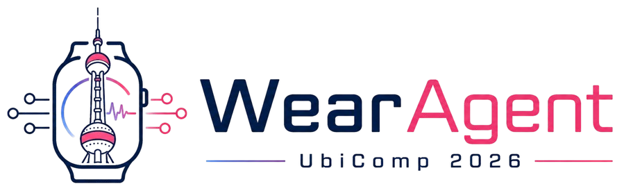
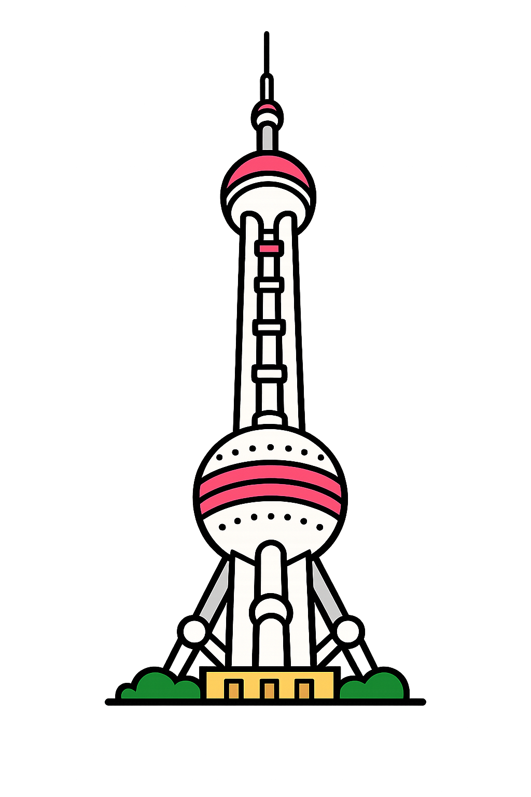

Intervention timing
When should a wearable agent step in, stay quiet, or wait for the user's attention?

The 1st International Workshop on Interactive AI for Personal Wearable Agents
Exploring wearable agents that bridge continuous sensing, foundation model reasoning, and proactive human-agent interaction.

Venue Shanghai, ChinaWearAgent 2026 focuses on a shift from passive activity recognition to proactive, agentic assistance, connecting continuous wearable sensor streams with the reasoning capabilities of LLMs and multimodal foundation models.
When should a wearable agent step in, stay quiet, or wait for the user's attention?
How can an agent act in real time on a real body under physical, computational, and attentional constraints?
Where should the boundary sit between human agency, confirmation, autonomy, and proactive assistance?


We invite contributions that define the next generation of personal wearable agents.
A cross-disciplinary team spanning wearable computing, ubiquitous sensing, HCI, mobile systems, and agentic AI.

South China University of Technology
Homepage
South China University of Technology
Homepage
KAIST
Homepage
Northwestern Polytechnical University
Homepage
University of Cambridge
Homepage
University of Michigan
Homepage
Shanghai Jiao Tong University
Homepage
University College London
Homepage
ByteDance
HomepageImportant dates and a half-day program designed around interaction, debate, and community building.
June 19, 2026, tentative.
July 10, 2026, tentative.
October 11/12, 2026, during UbiComp/ISWC 2026 in Shanghai.
All deadlines are 23:59 AOE.
Welcome, workshop goals, and framing of the three core research shifts.
Invited speaker: Prof. Fan Wu, Shanghai Jiao Tong University, confirmation pending.
Five-minute presentations of accepted papers.
Agent Envisioning: groups design proactive wearable-agent interaction scenarios.
Proactive vs. Reactive: agency, interruptibility, and the boundaries of always-on sensing.
Synthesis, awards, and next steps for community building.